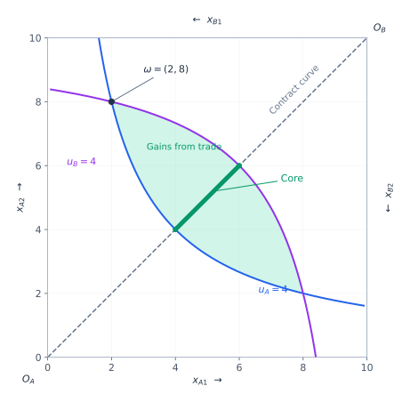
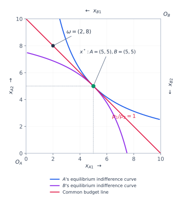

Partial equilibrium
Study one market, holding other prices and incomes fixed. This simplifies the analysis when feedback from other markets is limited.
Feasible trades, the Edgeworth box, competitive prices, and welfare theorems.
Study one market, holding other prices and incomes fixed. This simplifies the analysis when feedback from other markets is limited.
Determine prices and allocations across markets together. One good's price changes purchasing power and demand for other goods.
Which model is useful depends on the question. Predicting an equilibrium is a positive exercise; evaluating its efficiency or distribution is a normative exercise.
There are \(I\) consumers and \(N\) goods, with no production. Consumer \(i\) starts with endowment \(\omega_i=(\omega_{i1},\ldots,\omega_{iN})\) and receives consumption bundle \(x_i\geq0\). Feasibility requires, good by good:
The inequality allows disposal. If all available goods are allocated, it holds with equality.
A feasible allocation \(x'\) is a Pareto improvement over \(x\) if nobody is worse off and at least one consumer is strictly better off:
An allocation is Pareto efficient if no feasible Pareto improvement exists. Pareto comparisons are incomplete: if a change helps one consumer but hurts another, neither allocation Pareto dominates the other.
With quasilinear utility, one good serves as money: its quantity enters utility linearly. If there are no externalities and this good can be transferred freely between consumers, maximizing total surplus identifies efficient trade. An increase in total surplus creates scope to compensate those who lose, but is not itself a Pareto improvement.
With two consumers, \(A\) and \(B\), and two goods, all allocations that use the entire endowment fit into a rectangle of width \(\bar\omega_1\) and height \(\bar\omega_2\), where \(\bar\omega_n=\omega_{An}+\omega_{Bn}\).
The bottom-left corner is \(A\)'s origin. Moving right increases \(x_{A1}\); moving up increases \(x_{A2}\).
The top-right corner is \(B\)'s origin. Moving left increases \(x_{B1}\); moving down increases \(x_{B2}\).
Every point specifies both consumers' bundles. The endowment point \(\omega\) is the allocation before trade. Consumer \(i\)'s net purchase of good \(n\) is \(x_{in}-\omega_{in}\): positive for a purchase, negative for a sale.

The indifference curves through the initial endowment enclose a lens where both consumers are at least as well off. Interior points of this lens make both strictly better off; boundary points may leave one indifferent.
The contract curve contains the Pareto-efficient allocations. With smooth, increasing, convex preferences and positive marginal utilities at an interior allocation, efficiency requires equal marginal rates of substitution:
If the two rates differ, a small exchange can benefit both consumers. At an interior efficient point, the indifference curves are tangent. Boundary allocations and nonsmooth preferences require checking feasible improvements directly; tangency is not a universal test.
In this two-consumer economy, an unblocked barter outcome must be feasible, individually rational relative to the endowment, and Pareto efficient. The core is therefore the part of the contract curve inside the weakly preferred lens, including its endpoints.
Let \(p\gg0\), meaning every good has a strictly positive price. Consumer \(i\)'s wealth is the market value of their endowment, \(m_i=p\cdot\omega_i\). Their problem is:
It is as if the consumer sold their endowment and then purchased a preferred bundle. The notation \(x_i(p,m_i)\) always takes wealth as its second argument.
Consumer \(A\)'s binding budget is:
This line passes through \(\omega\) and has slope \(-p_1/p_2\). Since \(x_B=\bar\omega-x_A\), consumer \(B\)'s budget inequality becomes:

Individual excess demand is desired consumption minus the initial endowment:
Aggregate desired purchases exceed available sales: the market has excess demand.
Aggregate desired sales exceed purchases: the market has excess supply.
When \(z_n(p)=0\) for every good, the consumers' optimal bundles are jointly feasible. In an Edgeworth box, their preferred allocations coincide at a single point representing both bundles.
With continuous, strictly convex preferences and positive endowments, demand is single-valued and continuous at strictly positive prices. Aggregate excess demand is then continuous too.
Scaling all prices scales endowment wealth in the same proportion, leaving budget sets and demands unchanged:
Local nonsatiation means that, however close we stay to a given bundle, a strictly preferred bundle is available in the consumption set. Continuous, strictly increasing utility satisfies this condition.
With locally nonsatiated preferences, each consumer exhausts their budget. Adding \(p\cdot x_i=p\cdot\omega_i\) across consumers gives:
This is true at every strictly positive price vector for which demands are defined, including prices that do not clear markets.
If \(z_1(p)>0\), then \(z_2(p)<0\): the value of excess demand in one market is offset by excess supply in the other.
If \(N-1\) markets clear and the remaining good has a positive price, Walras' law implies that its market clears as well.
An allocation \(x^*\) and prices \(p^*\) form a Walrasian equilibrium when every consumer optimizes and all markets clear:
A standard sufficient version of the Arrow–Debreu existence result for a finite pure exchange economy assumes consumption sets \(\mathbb R_+^N\) and, for every consumer \(i\):
These are sufficient assumptions, not necessary ones. They provide a benchmark in which a competitive allocation and supporting prices exist.
If \((x^*,p^*)\) is an equilibrium, then \((x^*,\lambda p^*)\) is also an equilibrium for every \(\lambda>0\). The allocation stays unchanged. Choosing good 1 as the numeraire means dividing every price by \(p_1^*\), so its normalized price equals 1:
Even after a price normalization, general equilibrium need not be unique. Different relative prices can make all demands compatible at different allocations. Convex preferences and existence alone do not guarantee a unique equilibrium.
In this private-goods exchange economy, with locally nonsatiated preferences, every Walrasian equilibrium allocation is Pareto efficient. Continuous, strictly increasing utility is a sufficient preference assumption.
Let \(\hat x\) Pareto improve on the equilibrium allocation \(x^*\). For every consumer, \(u_i(\hat x_i)\geq u_i(x_i^*)\), with strict inequality for at least one.
A strictly preferred bundle must be unaffordable, or \(x_i^*\) would not maximize utility. A weakly preferred bundle cannot cost less than wealth: local nonsatiation would then allow a nearby strictly preferred bundle within the remaining budget.
with a strict inequality for at least one consumer. Summing gives:
Feasibility requires \(\sum_i\hat x_{in}\leq\sum_i\omega_{in}\) for every good \(n\). Multiplying each inequality by its nonnegative price and adding yields:
This contradicts the strict inequality. No feasible Pareto improvement exists.
The converse requires more structure. With continuous, strongly monotone, convex preferences, an interior Pareto-efficient allocation can be supported as a competitive equilibrium after suitable lump-sum transfers of wealth.
At a smooth interior efficient allocation, the common tangent to the indifference curves provides supporting prices. Convexity makes the chosen bundles globally optimal at those prices. Redistribution places each consumer's budget line through the target bundle.
A lump-sum transfer is fixed independently of the consumer's purchases or sales. It changes wealth while leaving relative prices unchanged.
For a target allocation \(x^*\) and supporting prices \(p^*\), let \(T_i\) be consumer \(i\)'s transfer measured in value:
A positive \(T_i\) is a receipt; a negative \(T_i\) is a payment. The new budget is:
Equivalently, goods can be redistributed as new endowments \(\omega_i'\), preserving the aggregate endowment and giving each consumer the required wealth \(p^*\cdot\omega_i'=p^*\cdot x_i^*\).